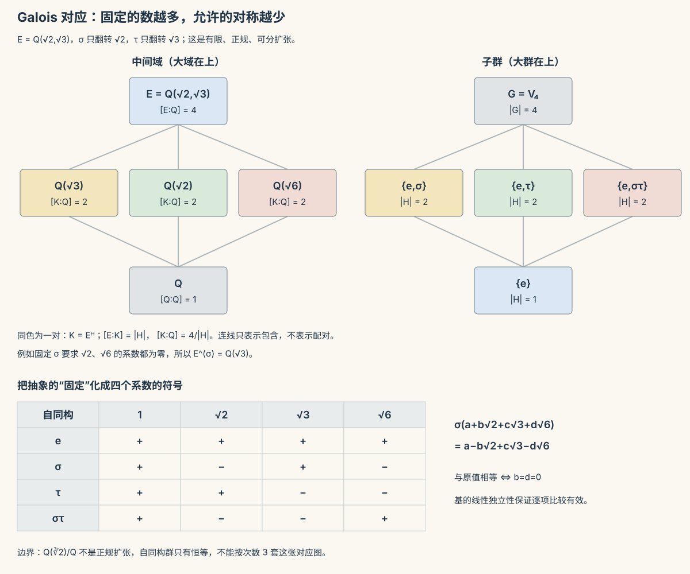

抽代 II · 环、域与 Galois 一瞥
群管一个运算，环管两个（加与乘）、域是能除的环。本页把这两层结构立起来，让高代 I 的多项式与"数域"认祖归宗，用有限域接通密码学，最后登顶眺望 Galois 理论——高代 I 那句"五次方程无求根公式"的证明蓝图。

1. 环与理想
定义 环 \((R, +, \times)\)：加法成 Abel 群、乘法结合、分配律（本页默认含幺）。例子库：\(\mathbb{Z}\)、\(\mathbb{Z}_n\)、多项式环 \(F[x]\)（高代 I 的主角正式入籍）、矩阵环 \(M_n(\mathbb{R})\)（非交换）。
零因子：\(ab = 0\) 而 \(a, b \neq 0\)（\(\mathbb{Z}_6\) 中 \(2\times3 = 0\)；矩阵环遍地都是——高代 III"\(AB=O\) 推不出 \(A\) 或 \(B\) 为零"的病根在此定性）。无零因子的交换环 = 整环（消去律成立的地界：\(\mathbb{Z}\)、\(F[x]\)）。
理想（环论的"正规子群"）：\(I \subseteq R\) 对加法成群且吸收乘法（\(r \in R, a \in I \Rightarrow ra \in I\)）。商环 \(R/I\)、环同态基本定理 \(R/\ker\varphi \cong \mathrm{im}\,\varphi\)——上一页的语法逐字重演（例：\(\mathbb{Z}/n\mathbb{Z} \cong \mathbb{Z}_n\)）。
主理想整环的双星：\(\mathbb{Z}\) 与 \(F[x]\) 的一切理想都是单生成的 \((a)\)——因为都有带余除法（辗转相除、唯一分解全线成立：高代 I 的多项式理论与初等数论原来是同一个抽象定理的两个实例——抽象代数"一次证明、处处收租"的招牌案例）。
2. 域：能除的世界
定义 域 = 非零元全体对乘法成 Abel 群的交换环（\(\mathbb{Q}, \mathbb{R}, \mathbb{C}\)、以及——）
定理 \(\mathbb{Z}_p\) 是域 \(\iff p\) 素。（证：\(p\) 素时 \(\gcd(a, p) = 1\)，Bézout 给逆元；合数时有零因子。）有限域 \(\mathbb{F}_p\) 由此诞生；一般有限域阶必为素数幂 \(p^k\)，且每阶恰一个（\(\mathbb{F}_{p^k}\)，用 \(\mathbb{F}_p[x]\) 模不可约多项式构造——多项式环再立一功）。
特征：\(1\) 自加多少次归零（素数或 0）。
🔗 密码学出口（有限域的用武之地）：RSA 的舞台是 \(\mathbb{Z}_n^*\)（Euler 定理 = Lagrange 定理的应用，上一页 Fermat 小定理的推广）；Diffie–Hellman/ElGamal 靠 \(\mathbb{F}_p^*\) 中离散对数难解；椭圆曲线密码在"曲线点群"上重演同一剧本（更短密钥同等强度——你钱包里的比特币签名就是它）；AES 的字节运算在 \(\mathbb{F}_{2^8}\) 中进行。"抽象代数无用"是二十世纪最快过期的判断。
3. 域扩张与两大古典问题（山顶眺望）
扩张与次数：\(F \subseteq E\)，\(E\) 是 \(F\)-线性空间（高代 IV 上岗），维数记 \([E : F]\)；望远镜公式 \([E:F] = [E:K][K:F]\)。单代数扩张 \(F(\alpha) \cong F[x]/(m_\alpha(x))\)（模极小多项式——商环构造的实战），\([F(\alpha):F] = \deg m_\alpha\)。
尺规作图三大难题的判决（次数论证，一段讲完）：尺规可作的数生活在一串二次扩张的塔中 ⇒ 其扩张次数必为 \(2^k\)。而三等分 \(60°\) 角需要 \(\cos 20°\)，其极小多项式 \(8x^3 - 6x - 1\) 三次 ⇒ \([\,\cdot\,] = 3 \neq 2^k\)——不可作。倍立方（\(\sqrt[3]{2}\)，三次）同判。两千年悬案，一个"数维数"的论证终审——线性代数当判官。
Galois 理论（一段话的山顶导览）：给每个多项式配一个群（根的对称群=Galois 群）；方程可用根式求解 \(\iff\) 其 Galois 群"可解"（可逐层拆成 Abel 商的群）。\(n \leq 4\) 时 \(S_n\) 可解——二三四次有求根公式；\(n \geq 5\) 时 \(S_5\) 含不可解的 \(A_5\) ⇒ 一般五次方程无根式解（Abel–Galois，高代 I 的欠条在此销账）。深层寓意："解方程"的可能性被"对称性结构"判定——把问题翻译成结构、由结构宣判命运，这正是抽象代数（乃至现代数学）的方法论本体。
4. 典型例题
例 1（找零因子与逆元） \(\mathbb{Z}_{12}\)：零因子 \(= \{2,3,4,6,8,9,10\}\)（与 12 不互素者）；可逆元 \(= \{1,5,7,11\}\)（成群，即 \(\mathbb{Z}_{12}^*\)，阶 4）。模 \(n\) 世界里"能不能除"看 \(\gcd\)。
例 2（商环构造复数） \(\mathbb{R}[x]/(x^2 + 1) \cong \mathbb{C}\)：模掉 \(x^2 + 1\) 即强行宣布 \(x^2 = -1\)，剩余类 \(a + bx\) 的乘法恰是复数乘法——复数不是"发明虚数"，是多项式商环的必然产物（高代 I 不可约多项式的终极用法）。
例 3（域扩张次数） \([\mathbb{Q}(\sqrt2, \sqrt3) : \mathbb{Q}]\)：望远镜 \([\mathbb{Q}(\sqrt2,\sqrt3):\mathbb{Q}(\sqrt2)]\cdot[\mathbb{Q}(\sqrt2):\mathbb{Q}] = 2 \times 2 = 4\)（需验 \(\sqrt3 \notin \mathbb{Q}(\sqrt2)\)：设 \(\sqrt3 = a + b\sqrt2\) 平方导矛盾）。基 \(\{1, \sqrt2, \sqrt3, \sqrt6\}\)——线性代数视角下的数域，一目了然。\(\blacksquare\)
抽代两页完工。下一门点集拓扑：把"连续""收敛""紧致"从度量中解放出来——分析的公理化地基。